Francisco Goya — Original Stamp Gallery
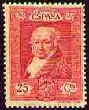
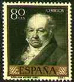
Goya y Lucientes, Francisco José de (1746-1828), Spanish painter and etcher considered, with El Greco and Diego Velázquez, one of the greatest Spanish masters. Goya was born in the small Aragonese town of Fuendetodos (near Saragossa) on March 30, 1746. His father was a painter and a gilder of altarpieces, and his mother was descended from a family of minor Aragonese nobility.
In IE you are invited to point on the stamps with the mouse index for more information.
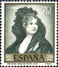
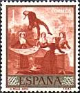
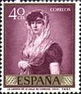
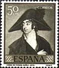
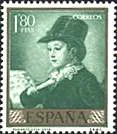
By 1786 Goya was working in an official capacity for Charles III, the most enlightened Spanish monarch of the 18th century. Goya was appointed first court painter in 1799.
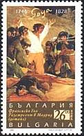
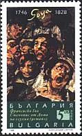
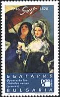
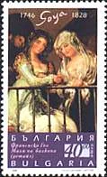
Some of Goya's most beautiful portraits of his friends, members of the court, and the nobility date from the 1780s. Works such as Marquesa de Pontejos (c. 1786, National Gallery, Washington, D.C.) show that Goya was then painting in an elegant manner somewhat reminiscent of the style of his English contemporary Thomas Gainsborough.
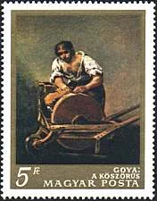
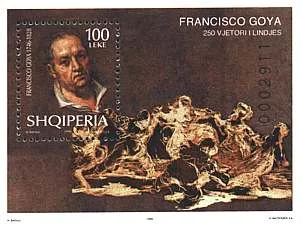
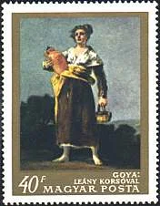
In the winter of 1792, while on a visit to southern Spain, Goya contracted a serious disease that left him totally deaf and marked a turning point in his career. A mood of pessimism entered Goya's work. Between 1797 and 1799 he drew and etched the first of his great print series Los Caprichos (The Caprices), which, in their satirical humour, mock the social mores and superstitions of the time.
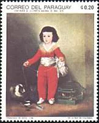
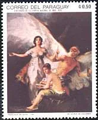
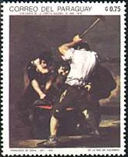
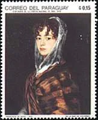
The horrors of warfare were of great concern to Goya, who observed at first hand the battles between French soldiers and Spanish citizens during the bloody years of the Napoleonic occupation of Spain. His paintings depict horrifying and dramatically brutal massacres of groups of unarmed Spanish street fighters by French soldiers.
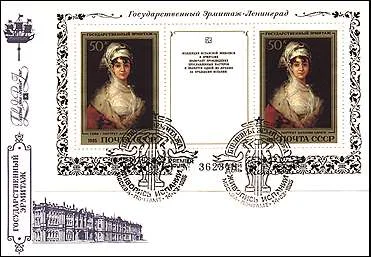
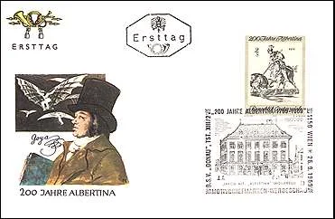
Goya died in self-imposed exile in Bordeaux, France, on April 16, 1828. He left no immediate followers of consequence, but his influence was strongly felt in mid-19th-century painting and printmaking and in 20th-century art. (After Microsoft Encarta 1996).
At the time when the first version of this page was published, 48 countries issued stamps commemorating Goya and his masterpieces. A small selection of them is displayed on the present page.
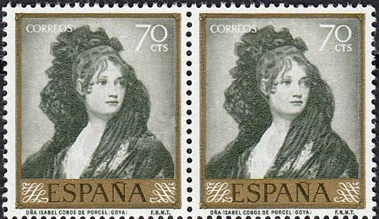
It is interesting to notice that the image on the above stamp, issued by Spain in 1958, and showing the beautiful Dona Isabel Cobos de Porcel, is flipped.
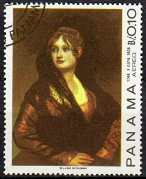
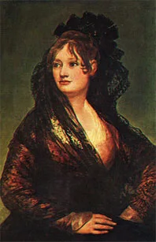
The stamp from Panama, on which we would rather expect such an error, displays correctly the painting, as seen on the original painting on the right of it.
Click the above banner to visit the site